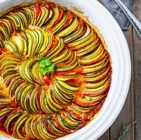

Ingredienser
- 1 rödlök
- 3 vitlöksklyftor
- 400 g aubergine
- 400 g zucchini
- 1 röd paprika
- 2 msk olivolja
- 1 msk tomatpuré
- 1 1/2 dl torrt vitt vin eller matlagningsvin
- 1 burk skalade tomater (à 400 g)
- salt

Slicing all the veggies evenly is key to make a good looking ratatouille. This also ensures everything cooks evenly. So, I prefer to use my trusty mandoline slicer to slice the veggies evenly. It saves time too!! You can buy a mandoline slicer from any good Kitchen Appliance Store or purchase it online.(affiliate link) First, I layer tomato sauce with minced garlic, thyme, oil, and seasonings. Sauce gets lots of flavor from slow cooking in oven with veggies.. So there is no need to cook it with garlic separately. Then, I layer the béchamel layer. Final layer is veggies. Once I find a rhythm with color of veggies, the ratatouille's ratatouille start appearing on the casserole. I do follow two things to ensure the veggies stay beautiful after cooking: 1) Layer both sauces at the bottom and nothing on top of veggies but some oil and seasoning. 2) Bake ratatouille casserole covered with parchment. So veggies cook but not get charred. In other words, don't loose the color. In short, layer sauce, layer veggies, cover, and bake! Serve ratatouille jumped right out of the movie
